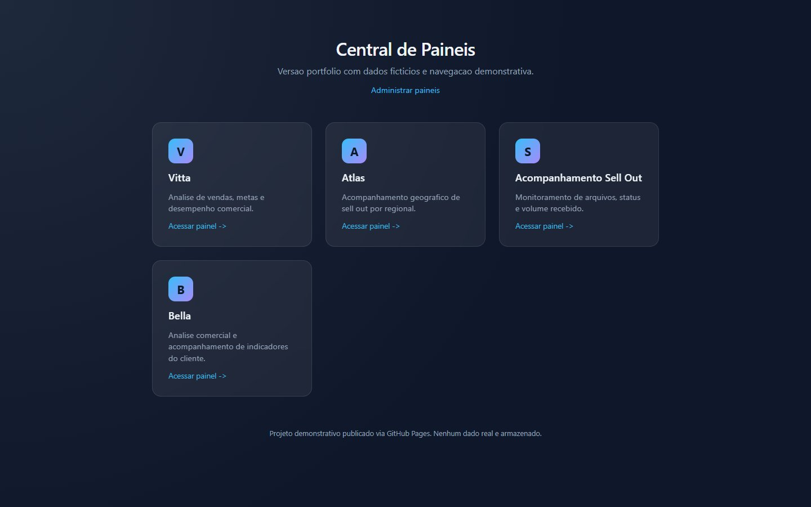
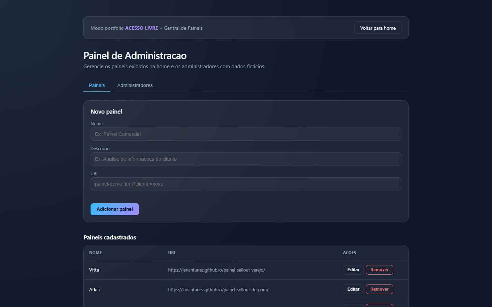
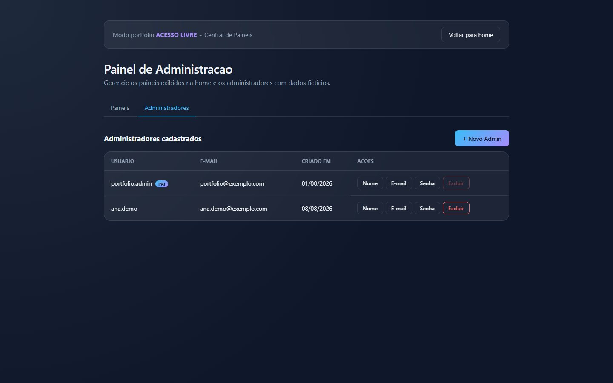

One entry point for every dashboard.
A portal that gathers the company's dashboards on a single page of cards. Each card leads to a dashboard, and the list is maintained through an admin area: adding, editing, or removing a dashboard doesn't require touching the code.

Many dashboards, no place to find them.
Each dashboard starts as a separate project with its own address. Over time, the links end up scattered across messages, bookmarks, and emails, and anyone who needs a number doesn't know where to start. The Dashboard Hub solves this with a single page where each dashboard appears as a card.
Where is that client's dashboard? In the hub, with a name, a description, and one click.
One page for everything
All dashboards side by side, each with a name, a sentence about what it shows, and the access link.
No code changes
A new dashboard comes in through the admin area: name, description, and URL. The home page builds itself.
Who can make changes
The list is publicly readable; adding, editing, and removing dashboards or administrators is a job for the admin area.
The home page doesn't know which dashboards exist.
It just reads a list and draws a card for each item. That separation guided the rest of the project:
Data outside the page
The dashboards live in a list (data/paineis.json), not in the HTML. Adding a dashboard means adding an item.
Minimal fields, the rest inferred
Without an initial, the home page uses the first letter of the name. Name and URL are required when adding a dashboard, so every card leads to a real one.
The page is never empty
If the data file fails to load, the home page uses a fallback list written into the code itself.
Nothing real in the demo
No login, no email, and no database. Edits stay only in the tester's browser, and the administrators are fictional.
Five fields describe a dashboard.
The data/paineis.json file is a simple list. Each dashboard has five fields; name and URL are required:
| Field | What it stores | If empty |
|---|---|---|
id | Dashboard identifier | Generated with crypto.randomUUID() on creation |
nome | Card title | Required in the admin form |
descricao | A sentence about what the dashboard shows | The card displays default text |
url | Dashboard address | Required in the admin form |
inicial | Letter on the card icon | First letter of the name, uppercase |
The home page looks for the list in three places, in this order, and stops at the first one that responds:
One card per dashboard, built on the fly.
The home page is a single page with a title, the link to the admin area, and a grid that adapts to the screen width (auto-fit, cards at least 260 px wide). JavaScript reads the list and creates each card:
Loads the list
browser, JSON, or fallback, in that order
Fills in what's missing
initial from the name, when missing
Draws the card
icon with the initial, name, description, and “Acessar painel” (Open dashboard)
Decides how to open it
external links (http or https) open in a new tab, with noopener noreferrer; internal links open in the same tab
The hub's look
Slate-blue gradient background, translucent cards with blur, and an icon with a sky-blue-to-lilac gradient. On hover, the card lifts and its border lights up.
No dependencies
Plain HTML, CSS, and JavaScript, with no framework and no build step. What's in the repository is exactly what the browser receives.
Two tabs: dashboards and administrators.
The admin area handles all the hub's maintenance. In the demo, every change is saved in localStorage under two keys: portfolio_paineis_publicados and portfolio_admins.
Create and edit in the same form
Name, description, and URL. “Editar” (Edit) fills in the form and switches the button to “Salvar alterações” (Save changes); “Remover” (Remove) asks for confirmation. Name and URL are required.
Username, email, and creation date
Create an administrator and, for each one, change the username, email, or password, or delete it. Each action opens a dialog with only the fields it needs.
Main user
Marked with the PAI (parent) badge. The delete button is disabled for this user.
Simulated password
In the demo, changing the password only confirms the action on screen; no password is stored.
Immediate effect
Back on the home page, the cards already reflect what was added, edited, or removed.


In the original project, the door has a lock.
The version published here is static and opens the admin area to any visitor. In the original project, the admin area is protected by a login, and there is a password reset page. The demo kept the screens and replaced what depended on a server:
reset-senha.html explains that passwords are disabled and goes straight to the admin area.exemplo.com email addresses.Show how it works without exposing who uses it: the demo stores no real data.
Pushed to main, it's live.
Publishing to GitHub Pages is handled by a GitHub Actions workflow (.github/workflows/pages.yml). It runs on every push to the main branch or manually, and publishes the entire repository folder:
Checkout
actions/checkout@v4 fetches the repository
Configures Pages
actions/configure-pages@v5
Packages the site
actions/upload-pages-artifact@v3, with the repository root as the content
Publishes
actions/deploy-pages@v4 returns the page address in the github-pages environment
Minimal permissions
The workflow only reads the content and writes to Pages (contents: read, pages: write, id-token: write).
One deployment at a time
The pages concurrency group prevents two simultaneous deployments, without canceling the one in progress.
No Jekyll, with a 404
The .nojekyll file publishes the files as they are, and 404.html sends old addresses to the right place.
In production with a login; here, in the browser.
- pages and
paineis.json - Pages workflow
- case study at the root
- hub at
app/
- cards and administration
- edits in
localStorage
This demo has the same screens as the original project: the home page with the cards and the admin area with dashboards and administrators. What changed is access, which is now open, and storage, which moved to the browser. The cards lead to the other dashboards in the portfolio, also published with fictional data.
Technologies
Add a dashboard and watch the card appear on the home page.
Suggested walkthrough: open the hub, click “Administrar painéis” (Manage dashboards), and add a dashboard with a name and URL. Go back to the home page: the new card appears with its initial filled in and opens the address you entered.